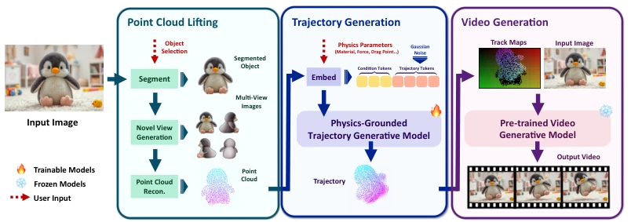
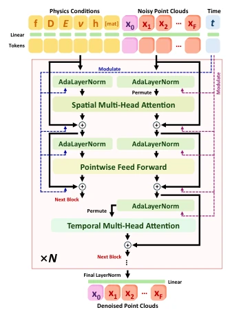
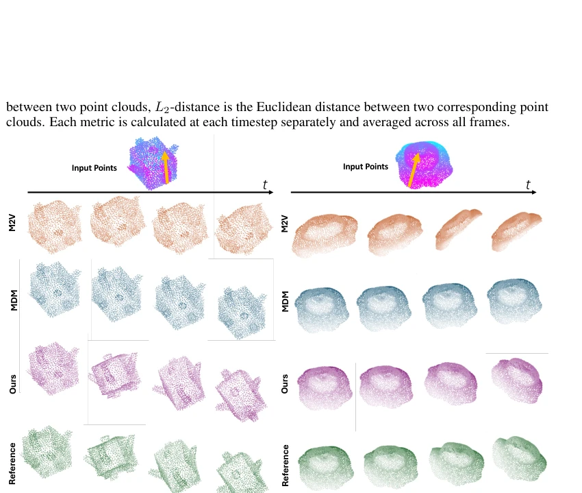
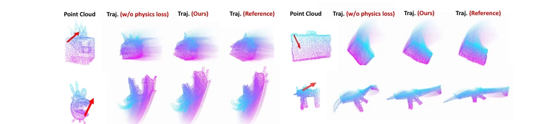
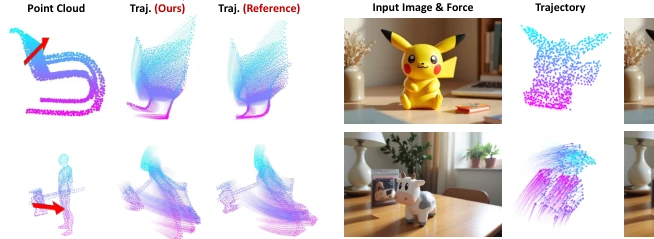
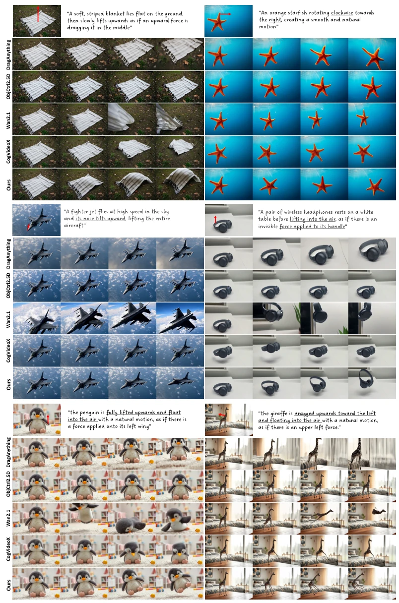

PhysCtrl 试图用生成式物理网络解决视频生成的物理合理性问题，这想法挺性感。它不直接模拟物理，而是学物理分布，用扩散模型生成点轨迹，再喂给视频模型。好处是快，不用调模拟器参数；坏处是本质还是“伪物理”，毕竟轨迹是学出来的，不是算出来的。虽然号称支持四种材料，但本质上还是点云轨迹预测，遇到复杂交互可能露馅。视频生成部分依赖 DaS [24]，如果 DaS 本身有幻觉，物理约束也救不了。总的来说，是个不错的中间件，但离真正的物理引擎还有距离，别指望它能替代 MPM [37]。此外，合成数据训练可能导致现实域差距，虽然作者声称鲁棒，但失败案例显示薄结构处理不佳。
Figure 1: We propose PhysCtrl, a novel framework for physics-grounded image-to-video generation with physical material and force control. PhysCtrl supports generating physics-plausible motion trajectories across multiple materials as control signals (second row), and allows controls over physics parameters (e.g., Young’s Modulus E of elastic material (third row)) and force (last row). Note that in the bottom three rows, overlaid trajectories and frames use lighter hues for earlier time steps and darker hues for later ones.
方法Method
整体流程分三步：首先将单目图像提升为 3D 点云；其次，利用条件扩散模型生成物理合理的 3D 点轨迹；最后，将轨迹投影为 2D 跟踪视频，作为条件输入预训练视频模型（DaS [24]）。核心创新在于轨迹生成网络：1) 采用时空注意力块（Spatiotemporal Attention），先空间聚合邻居信息再时间传播，模拟粒子相互作用；2) 引入物理损失（Physics Loss），基于 MPM 变形梯度更新约束预测点的位置和速度，确保运动符合连续介质力学；3) 支持弹性、沙土、橡皮泥、刚体四种材料，通过 [mat] token 区分。训练数据来自 550K 合成动画，覆盖不同物理参数。该方法避免了传统模拟器的数值不稳定，同时保留了物理可解释性，通过点云表示实现了跨材料的泛化能力。
—

Figure 2: An overview of PhysCtrl. Given a single image, we first lift the object in that image into 3D points. We then generate physics-grounded motion trajectories conditioned on physics parameters and external force with a diffusion model, which are then used as strong physics-grounded guidance for image-to-video generation.

Figure 3: Our trajectory generation architec- ture which consists of spatial attention and temporal attention in each block.
Figure 4: Qualitative comparison between our method and existing video generation methods.

Figure 6: Qualitative results: Compared to baselines, our method enables high-quality and coherent generation of motion sequences from physics conditions and closely matches the reference.

Figure 7: Comparison of using physics loss on trajectory generation. Here we show the final point position and tracks for points. With physics loss, the results are more closely aligned with the reference (simulated by MPM).

Figure 8: Failure cases.

Figure 9: More qualitative comparison between our method and baselines.